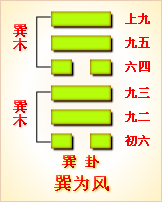
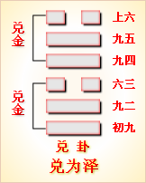

高岛易断 - 57巽为风
高岛易断 57 巽为风
《序卦传》曰："旅而无所容，故受之以巽。巽者，入也。"为卦二阳在上，一阴伏下，阳实阴虚，虚则能入。风无形无色，本虚象也；风之所行，无隙不入，是物之虚而善入者，莫如风。《巽》下画二偶为虚，故象风。以卑顺为体，以善入为用，此卦之所以名《巽》也。
巽
［75］
：小亨。利有攸往，利见大人。
▲ 篆书巽
《巽》本《乾》体，《乾》德元亨，亦称大亨，初动成《巽》，纯刚化柔，故为"小亨"。卦《彖》言"利有攸往"者，《大过》、《恒》、《益》，皆取《巽》也，过刚之人，所往必穷，《巽》以《坤》初一阴入《乾》，以柔济刚，黾勉前往，《巽》为利，故"利有攸往"。"大人"，指二五，《巽》二五皆《乾》体，《乾》二五皆"利见大人"，《巽》之《彖》辞，从《乾》来，《乾》为利，上互《离》，《离》为见，故《巽》《彖》亦曰"利见大人"。
《彖传》曰：重巽以申命。刚巽手中正而志行，柔皆顺乎刚，是以小亨，利有攸往，利见大人。
卦象上下皆《巽》，谓之"重巽"，《巽》为命，申亦重也。"申命"者，一再告诫也。卦以初四为柔，得《坤》气为卦之主，四刚在上，为卦之用，故《传》特著之曰"刚"。用刚之过，患在不得其中正，而用刚莫善于《巽》，故《传》又曰"刚巽夫中正"。夫是以柔之行，皆刚之行，刚之行，亦柔之行，斯令出风行，捷如影响，而无不如志也。初四之阴柔，适协夫二五之阳刚，故又曰"柔皆顺乎刚"。阳为大，阴为小，故曰"小亨"。自下往上，谓之往，阳刚在上，故利于往。"大人"者，秉阳刚之德者也，故利于见，是即所谓"顺乎刚"也。"顺乎刚"者，必善用柔，此《巽》之所以为《巽》也。
以此卦拟人事，《正义》曰：若施之于人事，无所不容，能自卑《巽》者，亦人事之善，莫善于用巽也。卦体上下皆《巽》，显见《巽》而又《巽》，凡有作为，只能附刚而立，不克自树，所成不大，故曰"小亨"。夫人不能无所往也，亦不能无所见也，往必求其利，见必以大人，固人之所愿也。然卦体一阴为主，二阳俯从，全在用巽，象为"重巽"，是其人秉性柔顺，一言一语，必为之审慎周详，从容晓谕，所谓巽与之言是也。然巽言而人不绎者，弊在偏于巽耳，故巽必兼以刚而巽乃善，谓之刚巽，是法与巽并用，婉而得中，顺以为正，斯令出惟行，谓之"刚巽乎中正而志行"也。究之其志得行，其道未宏，何也？以其"柔皆顺乎刚，是以小亨"。巽为进退，进即往也，风无往而不入，故往有攸利。《说卦传》曰，"齐乎巽，相见乎离，《离》象为大人，故《巽》曰"利见大人"。盖人以身涉世，行则有往，用则求见，道宜刚柔相济，义以中正为衡，《大象》曰，"君子以申命行事"，道亦不外乎是矣。
以此卦拟国家，《巽》之为象，行于天上为风，行于国中为命。风者，彼苍之号令，其入也又无所不至。故上卦为政府，上顺天命以发命令，而无拂民心，下卦为人民，顺承朝廷之条教，而无敢背违。上以《巽》道化下，下以《巽》道事上，上下皆《巽》，所谓"君子之德风，小人之德草"，草上之风必偃者，为国家安泰之象也。然天下之事，济以阳刚则道宏，处以阴柔则量隘，此卦以阳为主，才力弱，而展布者微，谋为疏，而设施者浅，不中不正，虽亨亦小矣。《系辞传》曰，"巽，德之制也"，又曰"巽以行权"，所谓德者，必柔克刚克之相兼也，所谓权者，必可立可权之并行也。昔者于变之朝，谟陈九德，宽栗刚塞，相辅而行，发号施令，罔不用中于民，而四方于以风动者，有由来矣，此即所谓"刚巽乎中正而志行"也。《大象》曰，"随风巽"，《说卦传》曰，"挠万物者莫疾乎风"，诰四方者莫不有命，风流令行，政教如此其远布矣。往者以顺而往，见者以顺而见，六爻以其柔顺乎刚，是以多吉，上爻失其所以为巽，则凶矣。
通观此卦，卦体一阴伏二阳之下，阳上阴下，情本相得，而阴又能下，其入阳也，阳遂俯听其令，是以阴为主而阳为从也；故《巽》之阴，能权能制，非优柔而寡断也。卦画一偶象虚，凡物虚则能入，风亦虚也，故取其象于风。风行而万物鼓舞，令出而万民率从，风有声无形，命亦有声无形，故取其象。善令民者，卑虚以察闾里之情，然后从容晓谕；命之既申，然后划一遵守，以考厥成。所谓"刚巽乎中正而志行"，四之所以"有获"，五之所以"无不利"也。惟其柔顺乎刚，故六爻多吉。初之"进退"，二之"纷若"，其谋审也，故其命顺，若谋不审，是非不明，可否不衷，徒以甘言为欢娱，其谁顺之！不巽之咎，起于自用，故下卦谋顺出命，上卦行命为事。初"志疑"而不断；二详审折衷；三不中正，不能谋，又不能断；四以断有功，五制命中正而志行；上《巽》懦无能，甚于九三，其究为躁，故凶。《巽》者，选也，与算通，算故能权，权者，谋也，巽"称而隐"，非惟诺谄奉之谓也，"以天下之至柔，驰骋天下之至刚"。爻辞曰"武人"，曰"田获"，曰"资斧"，其象为高，为长，故巽非徒柔也。阴阳刚柔，相济为用，若以阳乘阳，则阳无所施，以刚用刚，则刚无所入。阴虚以承阳，柔顺以用刚，故用刚莫如巽，此《彖》所以谓之"小亨"也。然则五之《彖》曰"先庚""后庚"者，何也？《巽》与《兑》相往来，《巽》位东南，天干甲木，《兑》位正西，天干庚金。木柔而能刚，故从直；金刚而能柔，故从《革》；木之性上遂，归根于土，故顺下；金之性下沉，利于致用，故悦上。顺故从绳而理解，悦故从《革》而响利。《巽》之时为春，《兑》之时为秋，万物齐于《巽》，悦于《兑》，一出一入，一始一终，而天地西南之用毕。二卦相资，金反为木，则为"后甲"，故随之《兑》，反为《蛊》之《巽》，《兑》为"先甲"，自秋还春，有事之象也。木反为金，则为"后庚"，故《巽》上反为《兑》下，则《巽》为"先庚"，自春往秋，悦利之象。《巽》入而隐伏，则不悦，故反《兑》；《兑》出而毁折，则不顺，故反《巽》。然《兑》未有不顺而能悦者，金未有不资本而能利者，故《巽》以阳顺阴而来下，《兑》以阳悦阴而往上，往来屈伸，自然之法象也。此《巽》之不为《蛊》者，惟以九五之一爻而已。圣人戒人君，制命于未乱，因以《蛊》之《彖》辞，为《巽》之爻辞。在《蛊》振饬更新，治乱相循，故"先甲""后甲""终则有始"；在《巽》勿劳更始，惟"申命行事"，故"先庚""后庚"，无初而自有终也。盖甲有初，庚无可为初，庚后三日，以癸终而已；苟颠覆自用以为命，与委靡阿顺以为《巽》者，皆非申命之治，而《蛊》且至也。是爻所以戒九五也。
《大象》曰：随风，巽。君子以申命行事。
"随"者，相继之义，"申命行事"者，申告君命而奉行之也。《巽》为从，从者，随也；又《巽》为风，以风随风，无乎不入，故曰"随风"。"随风"者，犹言从风，即"重巽"之谓也。风行相随，所向皆靡，号令所施，顺合民心，民无不从，所谓"君子之德风"也。又上卦之《巽》，为大君施命之象。下卦之《巽》，为臣民奉命之象，夫君命臣行，君臣之大义也，故曰"君子以申命行事"。
【占】 问时运：运途顺遂，百事盛宜。
○ 问营商：商业最宜随机应变，听命而行，斯可获利。
○ 问功名："风从虎"，有虎变之象焉。
○ 问战征：军令之行，捷如风火，令出惟行，无可迟疑。
○ 问婚姻：凭父母之命，媒妁之言，礼之正也。夫唱妇随，百年偕老，吉。
○ 问疾病：是风痹之症，须人扶持而行。
○ 问讼事：须重申禀诉。
○ 问失物：为风飘失，须重番寻觅，或可复得。
○ 问六甲：生女。
高岛易断 初六：进退，利武人之贞。
《象传》曰：进退，志疑也。利武人之贞，志治也。
初爻阴柔居下，为《巽》之主，巽，顺也，柔顺少断，故象为进退。狐疑不决，每见于发念之初，蓄疑败谋，此志之所以不治也。《巽》反成《兑》，《兑》为武人，武人果决，足以断疑，故曰"利武人之贞"。"贞"者，正也，斯刚强奋发之气，可以矫逡巡畏缩之偏。《象传》释以"志治"，是以武治疑，即以《兑》制《巽》也。
【占】 问时运：运途不正，心神犹豫，是以谋事皆颠倒无成。
○ 问营商：《巽》本为利，因疑而败，以断而成，知犹豫者必难获利也。
○ 问功名：就武可成。
○ 问婚姻：不在彬彬文士，而宜桓桓虎臣。
○ 问家宅：此宅朝东南，地位不当，进退不便，宜改朝西为利。
○ 问六甲：生女。
【例】 友人某来，请占气运，筮得《巽》之《小畜》。
断曰：巽者，风也，风之为物，或东或西，来去无常，犹多疑之人，进退无定也。"武人"者，取其刚果能断也。今足下占气运，得此初爻，《巽》为七八月之卦，《巽》又为木，知足下现交木运，时值初秋，木因风吹，摇动不定，喻言人心疑虑，以致进退不决。"武人"者肃杀之象也，天以肃杀而成秋，犹人以刚决而成事，足下一味巽柔，临事不断，浑如随风飘荡，毫无定见，本为畏事，不知反以多事。劝足下当以沉潜刚克处之，为得其正矣。
高岛易断 九二：巽在床下。用史巫纷若，吉，无咎。
《象传》曰：纷若之吉，得中也。
《巽》为床，床下为初，《巽》以一阴在下，故曰"床下"。凡阴气中人，必使其人神魂不定，疑鬼疑神，若有物凭之者焉，非用刚克，不能去其疑妄。"史"者掌卜筮之官，"巫"者掌祓禳之官，皆取诸《兑》象。《兑》又为附决，用史以释疑，用巫以禳灾，斯得感格于上下神祗，而吉祥汇集也，故曰"纷若，吉"。"纷"，众多之称，"若"，语辞。《象传》以"得中"释之，谓能行得其中，以感孚夫神祗，是以有"纷若"之吉也。
【占】 问时运：得神明保佑，运途多吉。
○ 问营商：凡贩运货物，有不决者，宜问诸卜筮，自能迪吉。
○ 问功名：得有神助，吉。
○ 问战征：地位既低，进退两难，当此之时，惟告求神明，自可获吉。无咎。
○ 问婚姻：卜之则吉。
○ 问家宅：宜祷。
○ 问疾病：宜祭祷床公床婆，自得无咎。
○ 问六甲：生女。
【例】 某缙绅来，请占方今时势，筮得《巽》之《渐》。
断曰：巽者，柔顺也，其为人必柔弱无能，亦优柔寡断。九二曰"巽在床下"，有匍匐床下，俯首乞怜之状也。足下占时势，得此爻辞，知方今时势，朝野上下，一以巽谀成风，以忠厚为迂疏，以奸诈为得计，所谓伺候于公卿之门，奔走于形势之途，今之士大夫所恃为进身之要策也。不知愈趋愈下，世道日衰，而祸患之来，皆其自取。爻辞曰"用史巫纷若，吉"，盖明示以卑《巽》之道，用之权贵，则谓谄谀，用之于神明，则谓诚求，诚求于神，神必佑之，是以吉而无咎也。足下有心挽回时势，可知所从事矣。
高岛易断 九三：频巽，吝。
《象传》曰：频巽之吝，志穷也。
三爻以阳居阳，处下《巽》之极。"频"者，数也，下《巽》终而上《巽》接，故曰"频巽"。所谓"刚巽乎中正"，固非徒取夫巽也，九三乃亟亟于巽以继巽，若一巽为不足，而又加一巽焉，是第知巽之为巽，而不知制《巽》之道，偏于巽者也。偏则吝矣，吝则穷矣。《象传》以"志穷"释之，三居《巽》之终，志卑道屈，是终穷也。
【占】 问时运：目下运途卑低，未免为人所贱。
○ 问战征：一味委靡，力弱志衰，难以免辱。
○ 问功名：卑而又卑，所得亦微矣。
○ 问营商：巽顺过甚，未能与人争强，何能获利？
○ 问婚姻：门户低微，成亦可羞。
○ 问家宅：屋宇低小，必是贫穷之户。
○ 问讼事：柔弱被欺，咎亦自取。
○ 问六甲：生女。
【例】 友人某来，请占气运，筮得《巽》之《涣》。
断曰：九三处内外卦之间，巽而又巽，谓之"重巽"，是一味委靡，不能免祸，反致启羞。足下占气运，得此爻辞，知目下气运柔弱，无力奋兴。当以《彖传》所谓"刚巽乎中正"者处之，斯巽得其济，而足以自强，则其志可行，其道不穷矣。
【例】 明治三十年，占贵族院气运，筮得《巽》之《涣》。
断曰：爻曰"频巽"，是上下皆《巽》，《正义》以频为频戚忧戚之容，谓志意穷屈，不得申遂，处《巽》之时，只得受其屈辱，故曰"频巽，吝"。今占贵族院，得此爻辞，知方今院中议员，皆以巽顺为怀，行《巽》之道，处《巽》之时，志穷力弱，只得受其屈辱，以致频戚不乐也。本年贵族院，必无功绩可见。
高岛易断 六四：悔亡，田获三品。
《象传》曰：田获三品，有功也。
四为重《巽》之主，得正而顺乎刚，故"悔亡"。四与初同体，初曰"利武人"，取《离》之为甲胄，为弓矢，四曰"田"，亦取《离》之为网罟也，其象亦相同。《周礼》四时之田，皆前期示戒，及其听命，即《大象》所云"申命行事"之义也。"获"，田所获也"。"三品"者，一为干豆，二为宾客，三为充君之庖。《象传》以"有功"释之，如《诗·豳风》所咏："献豜私豵，载续武功"，谓致禽兽而有功也。一云，《解》九二曰"田获三狐"，言去小人也；《巽》九四曰"田获三品"，言用君子也。
【占】 问时运：运途得正，灾悔俱亡，出而有功也。
○ 问战征：从东南进兵，自得斩获有功。
○ 问功名：当以献功获赏，出身成名。
○ 问营商：当以采办皮革羽毛等品致富。
○ 问婚姻：婚礼，古时弋凫射雀，亦田象。
○ 问疾病：曰"悔亡"，病必可愈。
○ 问失物：可得。
○ 问六甲：生女。
【例】 横滨某商来谓曰：仆今欲谋一事，请占其得失。筮得《巽》之《姤》。
断曰：《巽》为近市利三倍之卦，六四为重《巽》之主，足以当之。今占得四爻，四"悔亡，田获三品"，是明言无悔而有获也。子之谋事，其有大利可知也。子勿疑，举全力而从事可也。
某大喜，乃汇集资金，直赴日光会津地方，采买人参，转售与清商，果得大利云。
高岛易断 九五：贞吉，悔亡，无不利，无初有终。先庚三日，后庚三日，吉。
［76］
《象传》曰：九五之吉，位中正也。
九五居卦之尊，中而且正，是即"刚巽乎中正"之大人也，故诸吉俱备。"先庚三日"为丁，丁者，取叮咛告诫之意，"后庚三日"为癸，癸者，取揆度周详之义。卦体五动成《蛊》，《蛊》六五曰"先甲三日"辛，"后甲三日"丁，《巽》九五曰"先庚三日"丁。《蛊》终于丁，而《巽》则始于丁，不始于"先甲"之辛，为"无初"也；癸为十干之终，《巽》终"后庚"之癸，为"有终"矣，故曰"无初有终"。《蛊》为三月之卦，春旺于木，故用甲；《巽》为八月之卦，秋旺于金，故用庚。木腐生虫成《蛊》，《巽》用金克之，斯不至变而为《蛊》矣，故《蛊》用甲，而"小有悔，无大咎"；《巽》用庚，乃得"贞吉"而"悔亡"。《象传》即以位释之，谓其"中正"而得吉也。凡六十四卦中，于九五言"贞吉悔亡"者，惟此一卦而已。
【占】 问时运：逢丁癸日作事，无往不利，大吉。
○ 问营商：生业宜取木爻，日辰宜用金日，初有小悔，后必大利，吉。
○ 问功名：位得中正，爻曰"贞吉"，逢丁癸之年，必得成名。
○ 问战征：其于师旅，必叮咛以告诫，其于地势，必周详以揆度。临事好谋，先后不怠，故战无不胜，大吉。
○ 问婚姻：丁火癸水，水火相配，吉。
○ 问家宅：其宅坐北向南，地位中正，大吉。
○ 问疾病：三日可愈。
○ 问六甲：生女。
【例】 明治二十四年，占某贵显气运，筮得《巽》之《蛊》。
断曰：据爻象而论，气运以金水为旺相，自丁至癸，七年间正交盛运，所谓"贞吉，悔亡，无不利"也。《大象》曰"位得中正"，知贵下本年必升晋显职，禄位益隆，正当有为之时也；卦体九五动，变六五为《蛊》，《蛊》者腹内虫也，喻言国政之内乱也。贵下能法乎《巽》之用庚，庚者更也，以《巽》行权，因时制宜，更旧从新，命必以叮咛申之，事必以揆度行之，《彖传》所谓"刚巽乎中正而志行"者，是在贵下焉。
高岛易断 上九：巽在床下，丧其资斧，贞凶。
《象传》曰：巽在床下，上穷也。丧其资斧，正乎凶也。
上与初为终始，初在下多疑，既示以"武人之贞"；至于上居卦之极，位高责重，任事益当勇决，何得一味畏葸，自甘退伏，同于二之床下？宜其高而益危，无以自立也。"资斧"者，虞喜《志林》云资当作斋，斋戒入庙而受斧，谓上身居高位，入庙受斧，自足振其威权者也，盖即初利用武人之义；乃巽顺不断，失其威权，是即所谓"丧其斋斧"也。畏事而事益滋，避祸而祸反集，故曰"贞凶"。《传》以"上穷"释"在床下"，以上之高居廊庙，畏首畏尾，无异伏处床第，其穷为可哀也。以"正乎凶"释"贞凶"，明过《巽》者之失其正矣，失其正，是以凶也。
【占】 问时运：运途不正，作事委靡，愈高愈危，有丧无得，凶。
○ 问战征：身为主帅，畏首畏尾，必致丧师辱国，身亦危矣。
○ 问营商：可断不断，因循失时，耗损必大。
○ 问功名：必不能保其终也。
○ 问婚姻：有惧内之象，难期偕老，凶。
○ 问家宅：主有丧，凶。
○ 问六甲：生女。
【例】 明治二十四年，占国运治乱，筮得《巽》》之《井》。
断曰：上九处卦之极，极则思反，正当有为之时，上爻地甚高，事既多，任事愈重，威权在手，正可独断独行。国家当此隆会，得此人材，奋然振作，力求富强，不以巽懦自安，则反弱为强，转贫为富，不难旦夕期之。所患安于目前，不期上理，委靡不振，甘居人下，一切邦交等事，皆畏葸听从，不自争强，商务来往，既丧其财，国事交涉，又丧其威，是所谓"丧其资斧"也。维新以来，政府所急急图治者，虽以取法欧美为善策，然所取法者，多在皮毛，未得穷其精蕴，故事事出于欧美之下，是即所谓"巽在床下"也。为今之计，当重申命令，相期与天下更新，无因循，无苟且，当奋斧钺之威，以行其刚巽之志，斯武务修明，即驾于欧美之上不难矣。是治道日隆之休也，所愿秉国政者努力图之！
周易 - 57巽为风
周易第57卦_巽卦(巽为风)_巽上巽下
|  |

|

|
 |
| 本卦 | 互卦 | 错卦 | 综卦 |
周易第五十七卦详解
巽卦原文
巽。小亨。利有攸往，利见大人。
象曰：随风，巽。君子以申命行事。
白话文解释
巽卦：稍见亨通。利于出行，利于会见王公贵族。
《象辞》说：本卦为巽卦相迭而成，巽为风，因而长风相随，吹拂不断，是巽卦的卦象。君子观此卦象，取法于长吹不断的风，从而不断地申明教义，反复地颁行政令，灌输纲常大义。
《断易天机》解
巽卦巽上巽下，为巽宫本位卦。巽为顺，谦逊、顺从之意，对君子有利，利见大人。
北宋易学家邵雍解
顺伏容人，谦虚行事；得贵多助，利在远处。
得此卦者，运势起伏不定，宜随机应变，谦虚行事，则可得意外之收获。
台湾国学大儒傅佩荣解
时运：运势顺利，诸事皆宜。
财运：随机应变，获利可期。
家宅：可以安居；夫唱妇随。
身体：可能中风，须人扶行。
传统解卦
这个卦是同卦（下巽上巽）相叠，巽为风，两风相重，长风不绝，无孔不入，巽亦为顺、谦逊的态度和行为，可无往不利。
大象：此卦为两重巽风重叠，巽为入，风之所到无孔不入，尤如政令颁布，深入民心。
运势：波折重重，运势起落浮沉不定，要随机应变，心平气和，择善固执。
事业：正在发展中，应本着勇往直前的精神，战胜一切困难和险阻，奋发向上。万事起头难，开始会受挫折，但在有才德和有力量的人物帮助下，会有理想的结果。
经商：市场竞争激烈，风险大。商业活动务必小心谨慎，遵守商业道德，以谦逊的态度对待同行和顾客，及至竞争对手，必定可以取得利益。
求名：以谦逊的态度对待一切，但又不可自卑、软弱、做作，更不可虚伪，这样就可以进步很快。
婚恋：不可抱轻率的态度，而应慎重，相互尊重。
决策：头脑聪明、灵活，性格开朗，以谦虚的态度处世，会受到各个方面的欢迎，也会得到上级的重视。谦虚不可过度，应以刚健中正为前提，决不可表现为懦弱和虚伪。否则，不利于自身的成长。
第五十七卦的哲学含义
巽为风，八卦中巽的符号为""。八卦中巽卦的符号的产生，是古人在生产实践中，看到大雨即将来临之前，往往有大风刮来。就在这山雨欲来风满楼的时刻，天空中有着一层又一层厚厚实实的乌云在翻滚，云下又有着一股接一股的风在吹动。于是用"二"代表那一层又一层的乌云，而以"--"代表云层之下一股又一股的风。合在一起，形成了""这样的符号，以象征风。
巽卦初爻为阴爻，二阳爻在上。巽由乾卦初爻变阴而来，乾为金玉，故作生意能获三倍巨利。巽为震的旁通卦，震阳决躁，故为躁卦。由巽卦卦象、爻象、爻位还可悟出如下象意：外刚内柔、整齐、传达、生意、营利、无孔不入、钻空子、新鲜、言语、捷报、举荐、奔波、薄情、忧疑、烦躁、权谋、不果断等。
周易第五十七卦初九爻详解
初六爻辞
初六。进退，利武人之贞。
象曰：进退，志疑也。利武人之贞，志治也。
白话文解释
初六：进退听命，这是利于武人的占卜。
《象辞》说：进退听命，是因为自己没有成见。武人具有坚定的意志是应该的，因为只有意志坚定，才能勇敢无畏，临危不乱。
北宋易学家邵雍解
平：得此爻者，有得有失，不良者多招诽谤。做官的或有差役，进退不一，或有兼权，难中有易。
台湾国学大儒傅佩荣解
时运：谋事不成，考虑从军。
财运：犹豫不决，无利可图。
家宅：朝西有利；联姻军人。
身体：积极强身。
初六变卦
初六爻动变得周易第9卦：风天小畜。这个卦是异卦（下乾上巽）相叠，乾为天，巽为风。喻风调雨顺，谷物滋长，故卦名小畜（蓄）。力量有限，须待发展到一定程度，才可大有作为。
周易第五十七卦九二爻详解
九二爻辞
九二。巽在床下，用史巫纷若，吉，无咎。
象曰：纷若之吉，得中也。
白话文解释
九二：病人卧床不起，祝史巫士降神祭祀，禳灾驱鬼，忙碌不停。病情有好转，灾难消除了。
《象辞》说：祝史巫士禳灾驱鬼忙碌不停，之所以使病情有好转，因为九二阳爻居下卦中位，爻象既得，灾难自退。
北宋易学家邵雍解
吉：得此爻者，诚恳待人，谋望获利。做官的有升迁之机。
台湾国学大儒傅佩荣解
时运：神明保佑，运途顺利。
财运：买卖难决，最好占筮。
家宅：虔诚祷告；卜之则吉。
身体：祭拜免咎。
九二变卦
九二爻动变得周易第53卦：风山渐。这个卦是异卦（下艮上巽）相叠。艮为山，巽为木。山上有木，逐渐成长，山也随着增高。这是逐渐进步的过程，所以称渐，渐即进，渐渐前进而不急速。
周易第五十七卦九三爻详解详解
九三爻辞
九三。频巽，吝。
象曰：频巽之吝，志穷也。
白话文解释
九三：勉强顺从，其心必不顺畅。
《象辞》说：勉强顺从，而内心不顺畅，说明这是出于无可奈何。
北宋易学家邵雍解
凶：得此爻者，运势低迷，有穷困之厄。做官的有被贬职之忧。
台湾国学大儒傅佩荣解
时运：位卑志低，受人轻视。
财运：过于卑顺，如何争利。
家宅：贫穷之家；门户低微。
身体：太过疲弱。
九三变卦
九三爻动变得周易第59卦：风水涣。这个卦是异卦（下坎上巽）相叠。风在水上行，推波助澜，四方流溢。涣，水流流散之意。象征组织和人心涣散，必须用积极的手段和方法克服，战胜弊端，挽救涣散，转危为安。
周易第五十七卦九四爻详解详解
六四爻辞
六四。悔亡，田获三品。
象曰：田获三品，有功也。
白话文解释
六四：没有悔恨，狩猎获得各种猎物。
《象辞》说：狩猎获得各种猎物，说明狩猎大有收获。
北宋易学家邵雍解
吉：得此爻者，正当好运，多福多利。读书人会取得佳绩。
台湾国学大儒傅佩荣解
时运：走上正运，出而有功。
财运：皮革羽毛，皆可致富。
家宅：装潢美观；婚礼华丽。
身体：可以痊愈。
六四变卦
六四爻动变得周易第44卦：天风姤。这个卦是异卦（下巽上乾）相叠。乾为天，巽为风。天下有风，吹遍大地，阴阳交合，万物茂盛。姤（gǒu）卦与夬卦相反，互为"综卦"。姤即媾，阴阳相遇。但五阳一阴，不能长久相处。
周易第五十七卦九五爻详解详解
九五爻辞
九五。贞吉，悔亡，无不利。无初有终。先庚三日，后庚三日，吉。
象曰：九五之吉，位中正也。
白话文解释
九五：贞卜得吉兆，没有悔恨，无所不利。虽没有良好的开端，但有良好的结局。时日定在丁日或癸日，其事一定成功。
《象辞》说：
九五爻辞
之所以讲吉利，因为九五阳爻居上卦中位，像人事合于正道，自然吉利。
北宋易学家邵雍解
吉：得此爻者，谋望有成，无往不利。做官的先阻后顺。
台湾国学大儒傅佩荣解
时运：中正之位，无往不利。
财运：初有小悔，后得大利。
家宅：坐北朝南；相配得宜。
身体：三日可愈。
九五变卦
九五爻动变得周易第18卦：山风蛊。这个卦是异卦（下巽上艮）相叠，与随卦互为综卦。蛊本意为事，引申为多事、混乱。器皿久不用而生虫称"蛊"，喻天下久安而因循、腐败，必须革新创造，治理整顿，挽救危机，重振事业。
周易第五十七卦上九爻详解详解
上九爻辞
上九。巽在床下，丧其资斧，贞凶。
象曰：巽在床下，上穷也；丧其资斧，正乎凶也。
白话文解释
上九：人隐伏在床底下，钱财则被洗劫一空。卜问得凶兆。
《象辞》说：隐伏在床底下，正是上九阳爻穷途末路之象。钱财被洗劫，不正是凶险之事吗？
北宋易学家邵雍解
凶：得此爻者，多损失，或生疾病。做官的有运不逢时，须谨慎。
台湾国学大儒傅佩荣解
时运：越高越危，有失无得。
财运：因循失利，损耗不小。
家宅：有丧；惧内。
身体：或许告终。
上九变卦
上九爻动变得周易第48卦：水风井。这个卦是异卦（下巽上坎）相叠。坎为水；巽为木。树木得水而蓬勃生长。人靠水井生活，水井由人挖掘而成。相互为养，井以水养人，经久不竭，人应取此德而勤劳自勉。